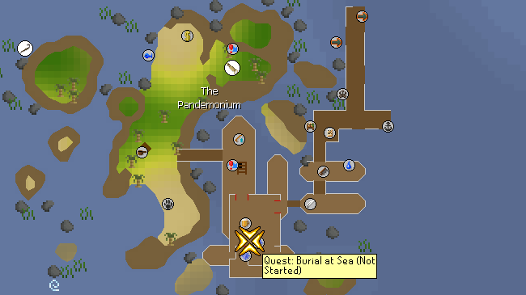
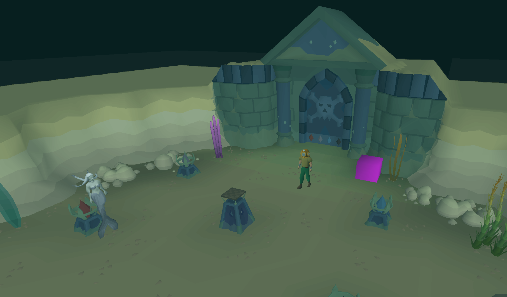
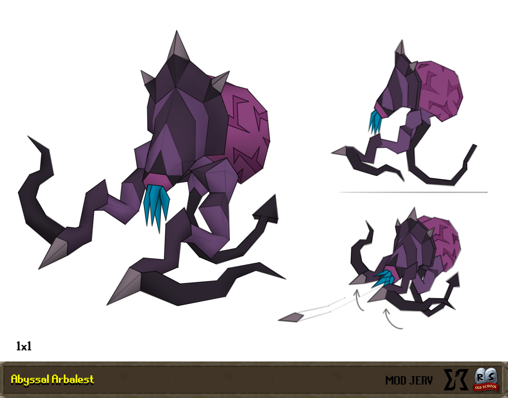

It's time to go deeper. Hope you've got your snorkelling gear!
Ahoy sailors and good day divers, we're back with a handful of tweaks to our proposals from last week!
We'll keep things brief since we're happy with the broader reception and it seems many of you are excited to see us laying the groundwork for a new type of area expansion which we'll be able to make use of in the future. Here's what's changing:
- Many of you weren't fans of the description of the 'auto-banking' for jewellery crafted in the Jewellery Production areas. We're opting to replace this auto-banking functionality with a mermaid courier who'll ferry your items for a small fee, but we're not dead-set on what this fee might look like yet - it could be a simple gold cost or perhaps the occasional piece of jewellery for their own collection!
- We're reducing the Abyssal Arbalest's Slayer requirement down to 73 so that players can obtain the Abyssal Gland a little earlier in their progression. It's worth noting that players often reach 79 Slayer long before obtaining an Abyssal Lantern from GOTR, but we're still content to knock this requirement down a little.
- We'll be adding a use to duplicate Abyssal Glands, allowing players to take them to Hagus in the Scar Essence Mine (requiring partial completion of Desert Treasure II) in exchange for a number of Scarred Extracts. We've not decided on a number here, but Extract is equivalent to 24,000 GP in savings, assuming you get out there and craft some runes. Or you could always sell them to Hagus (who buys them back at 90% of their cost) if you're all stocked up already.
- In lieu of regular jellies, the jellies found in the underwater Slayer area will take on the appearance of the jelly-fish. Thanks to /u/Maxwell_Lord for the suggestion, this is classic OSRS humour and we're kicking ourselves for not having thought of this.
Outside of changes, we wanted to clarify or talk through a handful of key points that we saw crop up last week.
- Some of you had questions about the choices of patch for the underwater Farming area, as well as how any of these plants were growing in the first place.
- This area sits in an air pocket, lit by a strange Sunstone totem, deepening the mysteries of this weird Wyrmscraig-y wonder. There's always potential for us to add more Coral or Seaweed patches to other locations in future, but it's not something we're looking to do for this update. New Coral patches in particular have a substantive effect on the Herblore meta and we're concerned about something relatively innocuous like one or two new patches having significant downstream effects. That doesn't mean that we'll never add more, just that we're not looking to expand this particular cave to accommodate these underwater patches for the time being.
- Some of you asked whether the Mining level requirements were the right way round on the precious and exotic (semi-precious) gem rocks.
- They are! From an in-world perspective our thinking is that the gems which you're able to easily break (opal, jade, red topaz) are harder to mine safely from a rock. Additionally there are plenty of loot tables which provide fistfuls of precious gems, which we feel puts these semi-precious gems at a bit of a premium for those of you looking to stock up on Silver jewellery in particular.
- We saw a handful of questions around whether or not the Teleport Anchoring Scroll would work on Abyssal Arbalests.
- Currently the plan is no, Arbalests are teleporting themselves backwards rather than teleporting you further away like their annoying (but iconic) quadrupedal cousins.
- There were some concerns over whether Shilo Village's gem mine would be entirely invalidated by the new area.
- We don't think so! Shilo's mine will still remain the far superior option for just blasting through entire inventories of gems and stocking up (or min-maxing your Mining XP gains). These new underwater areas are more for people who are fed up of making a couple of Burning Amulets then running out and having to repeat the whole process again, a spot for them to kick back, put a show or a stream on and make jewellery en masse - even if it's a little slower than gathering your own gems and utilising ores/bars largely obtained passively through PvM.
- You had questions around whether the new areas would be added to Konar's list of possible areas.
- Initially we were undecided, but have decided that the new areas will be added to Konar's list of potential offerings, assuming they contain a monster who already appears on Konar's task list. Distinct locales are sort of Konar's entire gimmick, so it wouldn't make much sense not to include them. This means that Abyssal Demons will have a new potential task in a single-combat area where they're always aggressive (perfect for a laid-back experience) while Jellies will have a new task in a multi-combat area.
- A number of broader questions were raised around whether these activities feel like they actually leverage the fact that we're diving underwater, as well as the different behaviours of underwater areas.
- You're right that a lot of these spots don't necessarily feel like something you can only do underwater and are perhaps a little safe. Our hope here is for these to serve as a solid framework and then - if you enjoy the vibe of what they're offering - we can expand with more areas that feel properly like diving activities. All of the areas will be visually distinct and should have a really different ambience to all of those boring 'on land' activities.
- In terms of 'standardising' the behaviour of the various underwater areas that already exist, those changes aren't something we're planning to commit to with these changes. They might make for a future Sweep-Up or QoL change though, and we've made a note of some of the suggestions that we saw talking about this!
That's all we've got to share for today, we're very happy with the initial reception and hope this update addresses the most important points that we saw, so we'll go ahead with polling later today! As a final note, this poll will feature a text-entry question at the end to give you an opportunity to let us know why you voted the way that you did throughout the poll. Feel free to use this section to share more detailed feedback with us that you might not feel comfortable sharing publicly!
It's been almost an entire year since many of you set sail for the first time, after being cruelly thrown overboard by Will and Anne during the Pandemonium quest. Those of you who noticed a 'Diving Expansion' at the bottom of this RuneFest's roadmap image have been wondering what it's all about: wonder no more!
Now it's high-time for revenge, or at least a stern talking to. Burial at Sea will have you hunting down Will and Anne both above and below the ocean's surface, but you'll soon discover that diving too deep into other people's business might have you unfathomably out of your depth - can you handle the pressure?

Burial at Sea is the second (and final) part of the story that you were introduced to in the Pandemonium quest, it's an 'Experienced' tier quest. You can start it by chatting to 'Squawking' Steve Beanie at the pub on the Pandemonium, so long as you have the following requirements:
- 42 Sailing
- 38 Smithing
- 32 Construction
- Completion of 'Pandemonium'
- Completion of 'Recipe for Disaster - Freeing Pirate Pete'
You might be wondering what on earth Pirate Pete has to do with any of this. While he's not exactly a key figure here, the diving gear that you make during his Recipe for Disaster chapter absolutely will be, because Burial at Sea will take deep sea diving to new heights (or lows?) with in-depth underwater segments both during and after the quest!
We're not here to give away any story details about the quest, but you can expect this to conclude the story of Will and Anne while also tying into some deeper narratives.
For your troubles, you'll be awarded:
- 3 Quest points
- 10,000 Sailing XP
- 2,500 Smithing XP
- 10,000 Coins
- Deep Sea Diving Gear
- Diving Bell
- The ability to go Deep Sea Diving
The last point in that list is likely one that stands out, so let's take a deep dive on our proposals for your post-quest activity: Deep Sea Diving.
Question #1
Should we add the Burial At Sea quest, as described in the blog? This is an Experienced tier quest that would unlock the ability to go deep sea diving.

A sneak peek below the sea. Don't read too much into the pink cube, it's what we use for placeholder assets and is not an easter egg or deep lore tidbit...
Using the equipment you'll create during the quest, you'll be able to dive deep beneath Gielinor's oceans at a variety of locations called diving sites. Think of these diving sites as being similar to small islands, except you're in a high-pressure environment far below the waves - they're actually very quaint locales if you just don't think about it too much.
There will be a number of these sites dotted around, each with their own Sailing level requirements to be able dive there, and each with different activities to participate in. Some might be simple areas particularly rich in a certain skilling resource, some might contain familiar monsters that serve as new areas for Slayer tasks, while others might contain entirely new enemies or resources. We're planning to start with a smaller complement of these so that we can set the tone and figure out what works for you, then we'll look at add more over time - just like any other content update or new area.
Let's take a look at some of the activities on offer under the sea, we hope that at least one of these proposals enraptures you.
At two sites, you'll find mineral-rich areas nestled near hydrothermal vents spewing out hot water. These vents allow for jewellery to be smelted in a highly efficient manner, while the rich minerals nearby are full of glittering goods to be smelted!
The low-level Jewellery Production diving site would contain:
- Some silver and gold rocks.
- Some gem rocks, identical to the ones found at Shilo Village.
- A hydrothermal vent acting as a spot for a buildable magical furnace, which automatically sends your smelted jewellery to the bank using teleportation magicks.
The high-level Jewellery Production diving site would contain:
- Some silver and gold rocks, with faster respawn rates than their mainland equivalents.
- Two new types of gem rock:
- Precious gem rocks (requires 65 Mining) which provide uncut sapphires, emeralds, rubies and diamonds when mined.
- Exotic - calling them semi-precious feels rude - gem rocks (requires 75 Mining) which provide uncut opals, jades and red topazes.
- A hydrothermal vent acting as a spot for a buildable magical furnace, which automatically sends your smelted jewellery to the bank using teleportation magicks.
Question #2
If Burial at Sea and the ability to go deep sea diving are added, should we add the Jewellery Production Areas outlined in the blog? These new areas feature gem rocks and a hydrothermal vent to act as a furnace, which can be upgraded to automatically bank your smelted jewllery.
At one site, you'll navigate to a cave which isn't flooded. Here you can interrogate a nearby Farmer and a Tool Leprechaun as to why on Gielinor he's in an underwater cave, and also gain access to some more Farming patches:
- A spirit tree patch, for easy returns
- A celastrus tree patch
- A mushroom patch
- A hardwood tree patch
While most people would squirm at the thought of spending much time in a damp underwater cave, it seems like this one will be well worth your while to revisit!
Question #3
If Burial at Sea and the ability to go deep sea diving are added, should we add a new underwater Farming area, as described in the blog? This area would feature a Spirit Tree patch, a Celastrus Tree patch, a Mushroom patch and a Hardwood Tree patch.
For those of you seeking a little more action underwater, one diving site features a handful of Slayer creatures, a helpful addition for anybody engaging with Mortimer regularly. At this site you'll find a large multi-combat area containing:
- Depth Crawlers
- Higher-level (~level 60) variants of Cave Crawlers, featuring their own superior version and loot table.
- Drowned Mages
- Higher level (~level 85) variants of Infernal Mages, featuring their own superior version and loot table.
- Jellies
- Just regular jellies!
Question #4
If Burial at Sea and the ability to go deep sea diving are added, should we add new low- and mid-level Slayer areas as described in the blog? These would feature higher level variants of Cave Crawlers and Infernal Mages (with their own Superior variants and loot tables) as well as regular Jellies.

Perhaps you're not content with familiar faces and want to take on something a little more otherworldly. One diving site will take you close to an abyssal portal, ferrying a variety of Ch'thonian horrors both old and new into Gielinor's oceans. At this site you'd be able to take on:
- Abyssal Demons
- Abyssal Rock Slugs
- Higher-level (~level 70) variants of Rock Slugs, featuring their own superior version and loot table.
- These don't require salt to kill, we're already underwater after all.
- Abyssal Arbalests
- Require level 73 Slayer
- Abyssal Arbalests are a type of Abyssal that we've never seen before, they'll bombard you with Heavy Ranged attacks and try their best to maintain a comfortable distance using their pesky teleportation capabilities.
Abyssal Arbalests are the more interesting addition here as a new Slayer monster unlocked at 73 Slayer, positioned as a reasonably relaxed Slayer task with a solid regular loot table. In line with what feels like our standard approach these days, we'd look to add these to core Slayer masters (including Nieve and Duradel) with a medium weighting but low quantity so that players who don't fancy killing these can blitz through them. We'll add an extension unlock for players who enjoy them as a task or want to chase their most interesting drop: the Abyssal gland (the name's a placeholder right now but it seems fairly accurate).
The Abyssal gland is a brand new, untradeable item only obtained from Abyssal Arbalests. The Dark Mage inside the Abyss seems particularly interested in these new foes, and will deepen your understanding of Runecraft in return. If you show him the Abyssal gland he'll take it off your hands and he'll share some ancient wisdom with you, allowing you to triple (3x) the durability of your Runecraft pouches forever more, as a permanent unlock. The aim here is that this would serve as a nice Runecraft QoL upgrade with significantly less variance than obtaining an Abyssal Lantern from Guardians of the Rift (or let you use different types of log more frequently), this should add a little extra desirability to Abyssal Arbalest tasks on top of them being a decent task with solid loot in their own right!
Question #5
If Burial at Sea and the ability to go deep sea diving are added, should we add the new Abyssal Slayer area, including the new Abyssal Arbalest monster, as described in the blog?
Question #6
If the Abyssal Arbalest is added, should it drop the Abyssal Gland? This is an untradeable item that can be shown to the Dark Mage in order to triple the durability of your Runecraft pouches.
For our final diving site, we've got another addition to the catalogue of 'underwater skilling activities that focus on hybrid XP gains'. If you gave us £1 for every one of these (including this one), we'd have £3, which admittedly isn't much but it is fun that it's happened three times!
You'll have to use your Thieving skills to somehow tempt the clams into opening up, then rely on a binding spell to make sure the clam remains open while you rummage around in there, stealing valuables and earning Thieving XP. We're looking at loot tables that feature stackable items so that you're able to stay here for an extended period of time, with the occasional 'jackpot' treasure for a nice sum of High Alchemy fuel.
Additionally, you'll have a rare chance at snagging some of the sails from less-fortunate ships. Just like they say, one clam's trash is another adventurer's treasure!
We're proposing three varieties of clam, split up as follows:
| Clam | Thieving Level Required | Spell Required | Notable Drops |
| Crab-eater Clam | 46 | Bind (Magic Lvl 20) | Damaged Sail Shiny Pearl (3k HA) Bright Pearl (6k HA) |
| Man-eater Clam | 63 | Snare (Magic Lvl 50) | Jolly Roger Sail Big Pearl (15k HA) Huge Pearl (30k HA) |
| Shark-eater Clam | 83 | Entangle (Magic Lvl 79) | Dragon Sail Enormous Pearl (60k HA) |
To top all of this off, we'll have a handful of additional charting tasks for you to complete, and plenty of lore or environmental storytelling tidbits for any of you looking to really immerse yourself - both literally and figuratively - in some of the oceans' deepest, darkest pockets. Here's a quick look through the new patterns!
Question #7
If Burial at Sea and the ability to go deep sea diving are added, should we add the Omnivorous Clams, as described in the blog? These are a hybrid Magic/Thieving activity with a solid loot table and the chance for three new sail cosmetics (the Damaged Sail, the Jolly Roger Sail and the Dragon Sail).
That's deep sea diving & the Burial at Sea quest! A brand new adventure featuring revenge and mystery in equal parts, with plenty of new locations to unlock for those willing to brave the briny deeps! Polls open soon so make sure to share your thoughts with us and then have your say in-game!
You can also discuss this update on the 2007Scape subreddit, the Steam forums, or the official OSRS Discord. For more information, check the official Old School Wiki.
Mods Abe, Abyss, Acorn, Ape, Arcane, Archie, Argo, Ash, Asherz, Ayiza, BigRig, Blighted, Blossom, Boko, Brooksie, Bulb, Chilly, Criminal, Curse, Daizong, Default, Doctor, Ed, Elena, Enigma, Entropi, Forge, Frogs, Fuzz, Gecko, Ghost, Gizmo, Goblin, Grace, Grub, Halo, Harold, Hend, Hornet, Husky, Ivory, Jalo, Jamesy, Jerv, Keyser, Kieren, Kirby, Kurotou, Leebleh, Lenny, Liron, Lotus, Lykos, Mack, Maeve, Manked, Markos, Maylea, Mobius, Moogle, Morty, Moz, Necro, Nin, Nixon, Nox, Nylu, Oasis, Onyx, Ori, Other, Otter, Pheasant, Philomel, Pork, Pumpkin, Puppi, Pyro, Rach, Redfield, Rice, Roy, Ry, Saiyan, Sarnie, Schmidt, Shogun, Shroom, Sigma, Skylark, Smithy, Sova, Spacebar, Spyro, Squid, Starry, Suharun, Surma, Sween, Tide, Titania, Titus, TJ, Tomb, Tsourorf, Tyran, Veda, Vegard, West, Wolfy, Yozora, Yume & Zaf
The Old School Team